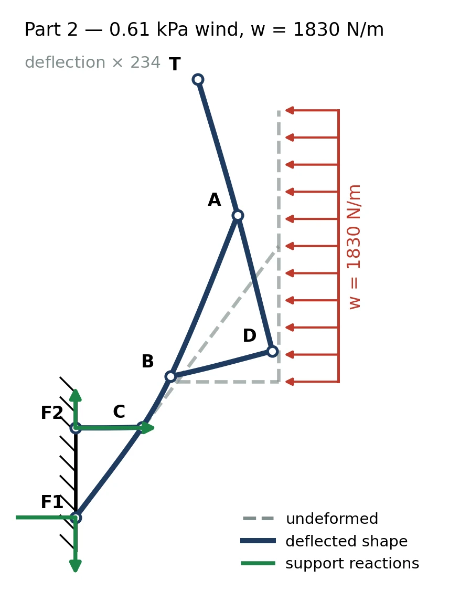

ENGINEERING SOFTWARE / NUMERICAL METHODS
Structural analysis.
Every step visible.
A 2D frame analysis toolkit that turns the direct-stiffness method into an interactive modelling workflow, while keeping the matrices, forces and worked solution available to inspect.

NOW / DIRECTLY IN YOUR BROWSER
Your structure.
Your experiment.
Draw nodes, connect members, apply loads and analyse. Explore trusses and frames with transparent results and downloadable working.
01 / THE CHALLENGE
Start with the system.
A structural analysis result is more useful when its assumptions and assembly are visible. This toolkit implements the direct-stiffness method for 2D frames and presents the model, solved response and intermediate working through graphical interfaces.
The calculation engine handles element stiffness, coordinate transformations, global assembly, equivalent nodal loads and recovery of element forces and support reactions. The GUI makes that sequence easier to construct and inspect.
02 / ENGINEERING DECISIONS
The thinking behind the build.
Separate the engine from the interface
A dedicated frame toolkit performs the structural calculations. Tkinter and PyQt6 interfaces share model handling, unit conversion, plotting, session storage and worked-solution generation.
Preserve the analysis conventions
Degrees of freedom, assembly matrices and reaction recovery follow the course conventions. Explicit units and expression handling help connect the graphical model with the underlying mathematical formulation.
Show the working, not only the answer
The application exposes the assembly, solve and recovery stages, including element diagrams and matrices. A worked-solution view can be exported to PDF for further inspection.
Support visual iteration
Nodes, supports, elements and loads are placed through the interface. Saved sessions, deflected shapes and reactions allow users to revisit the model and see what a change does.
03 / A CLOSER LOOK
From the project workspace.
Explore the design and analysis assets. Select an image to view the detail.
04 / OUTCOME & LEARNING
What the work revealed.
The repository contains the direct-stiffness engine, shared application layer, two desktop GUIs and analysis/report outputs. Development documentation records checks against reference course problems; the transparent worked solution provides a way to trace a result back to its assembly and assumptions.
The figures shown here are actual outputs from the project’s analysis workflow. The application is an educational engineering tool, with interpretation tied to the model, units and assumptions used for each problem.
An engineering tool should explain itself.
A result becomes easier to trust when the path to it is visible. Separating the numerical engine from the UI makes that path reusable and keeps both interfaces consistent.
05 / CONTEXT & CREDITS
The people and the tools.
Engineering software · ENME302. The case study draws from the solver source and development documentation. Geometry, deflection and design-study figures are actual generated outputs from the project’s analysis workflow.